par(mar = c(1, 1, 1, 1))
g1 <- make_graph(edges = c(1, 2, 1, 3, 2, 3, 3, 4), n = 4, directed = FALSE)
plot(g1)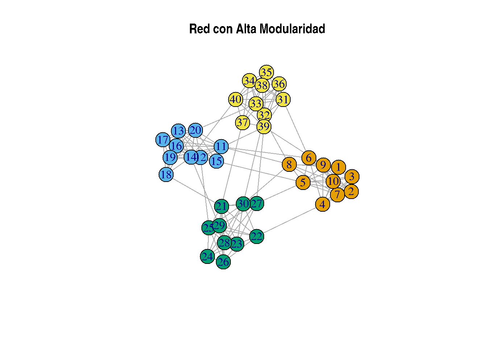
La biología de sistemas se basa en el uso de redes para entender las interacciones complejas en sistemas biológicos. En este tutorial, exploraremos los conceptos fundamentales de grafos y redes utilizando el paquete igraph en R.
Primero, aseguramos de tener instalado el paquete igraph:
Un grafo es una estructura matemática que se compone de un conjunto de nodos (o vértices) y un conjunto de aristas (o enlaces) que conectan pares de nodos. Los grafos son útiles en diversas disciplinas, incluida la biología, para modelar relaciones y interacciones entre diferentes entidades, como proteínas, genes y metabolitos.
Nodos (Vértices): Los elementos individuales de un grafo. Un grafo se puede definir como \(G = (V, E)\), donde \(V\) es el conjunto de nodos y \(E\) es el conjunto de aristas. En biología, un nodo puede representar una proteína, un gen o cualquier otra entidad de interés.
Aristas (Enlaces): Las conexiones entre los nodos. En un grafo que representa interacciones proteína-proteína (como STRINGdb por ejemplo), una arista podría indicar que dos proteínas interactúan. Matemáticamente, cada arista se puede representar como un par ordenado de nodos: \(e = (u, v)\), donde \(u, v \in V\).
Grado (Degree): El grado de un nodo \(v\) es el número de aristas que inciden en él. Por ejemplo en el siguiente red, los nodos 1, 2 y 4 tienen un grado de dos. El nodo 3 tiene un grado de tres. Esto es una red no-dirigida, o un grafo en el que las aristas no tienen dirección, lo que implica una relación simétrica entre nodos.
Para el nodo \(i\)-ésimo en una red, denotaremos su grado como \(k_i\). Por lo tanto, para el siguiente red, \(k_1 = k_2 = 2\), \(k_4 = 1\) y \(k_3 = 3\).
par(mar = c(1, 1, 1, 1))
g1 <- make_graph(edges = c(1, 2, 1, 3, 2, 3, 3, 4), n = 4, directed = FALSE)
plot(g1)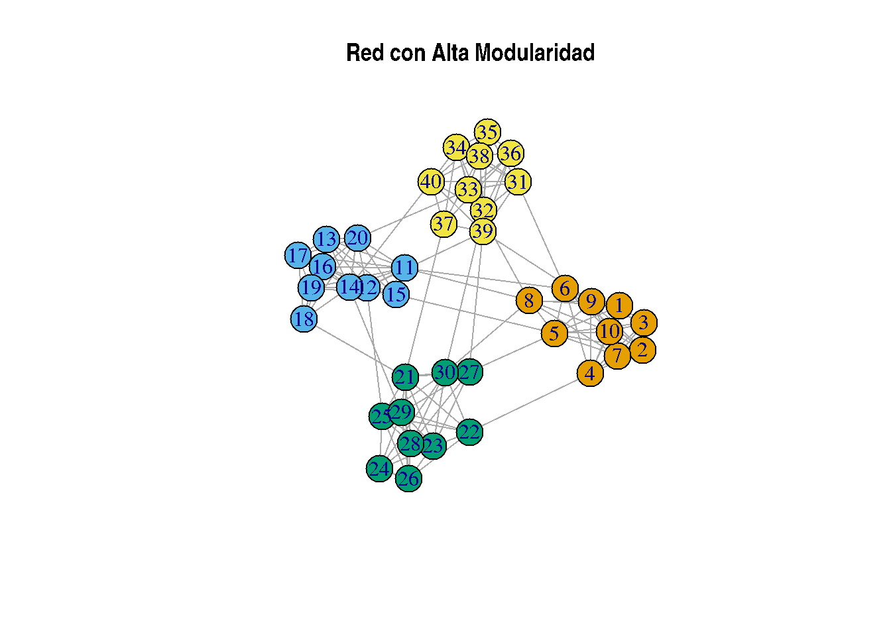
Como se mencionó anteriormente, el número total de enlaces se denota como \(E\). En una red no dirigida, es fácil entender que \(E\) debería ser la mitad de la suma de todos los grados de los nodos. Esto es porque cada enlace pertenece a dos nodos y, por lo tanto, cada enlace se cuenta dos veces. Así tenemos:
\[ E = \frac{1}{2} \sum_{i=1}^{N} k_i \]
En la red anterior, \(E = 4\).
El grado medio, denotado como \(\langle k \rangle\), es simplemente la media de todos los grados de los nodos en una red. Para la red anterior (Figura 2.2), tenemos:
\[ \langle k \rangle = \frac{1}{4} \cdot (k_1 + k_2 + k_3 + k_4) = \frac{1}{4} \cdot (2 + 2 + 3 + 1) = 2 \]
Esto significa que, en promedio, cada nodo en la red tiene 2.25 enlaces.
De acuerdo con su definición, sabemos que:
\[ \langle k \rangle = \frac{1}{N} \sum_{i=1}^{N} k_i \]
Combinando esto con la Ecuación (2.1), obtenemos:
\[ \langle k \rangle = \frac{2E}{N} \]
Un nodo con un alto grado tiene muchas conexiones, lo que puede indicar que es una proteína central o un hub en una red biológica.
g2 <- make_graph(edges = c(1, 2, 1, 3, 2, 3, 3, 4), n = 4, directed = TRUE)
par(mar = c(1, 1, 1, 1))
plot(g2)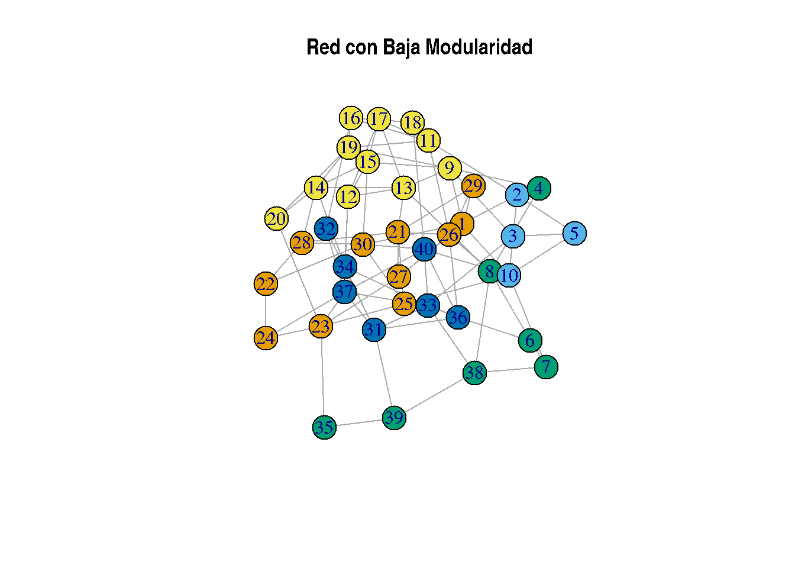
Cada enlace en la red anterior es dirigido. Si calculamos el grado medio de la red según la ecuación para redes no dirigdas, perderemos información.
Por lo tanto, distinguimos entre el grado de entrada, denotado como \(k_{\text{in}_i}\), y el grado de salida, denotado como \(k_{\text{out}_i}\). \(k_{\text{in}_i}\) representa el número de enlaces de otros nodos que apuntan al nodo \(i\), y \(k_{\text{out}_i}\) representa el número de enlaces que parten del nodo \(i\) y apuntan a otros nodos.
Para un nodo \(i\) en una red dirigida, su grado es la suma del grado de entrada y el grado de salida. Por lo tanto,
\[ k_i = k_{\text{in}_i} + k_{\text{out}_i} \]
Y \(E\), el número total de enlaces en una red dirigida, es:
\[ E = \sum_{i=1}^{N} k_{\text{in}_i} = \sum_{i=1}^{N} k_{\text{out}_i} \]
Para un enlace dirigido entre el nodo \(i\) y el nodo \(j\), es decir, \((i, j)\), este constituye un grado de entrada para un nodo, pero un grado de salida para el otro. Por ejemplo, en la red dirigida, el enlace \((1,2)\) cuenta como un grado de entrada para el nodo 2, pero como un grado de salida para el nodo 1.
¿Cuál es el grado medio en una red dirigida?
\[ \langle k_{\text{in}} \rangle = \frac{1}{N} \sum_{i=1}^{N} k_{\text{in}_i} = \langle k_{\text{out}} \rangle = \frac{1}{N} \sum_{i=1}^{N} k_{\text{out}_i} = \frac{E}{N} \]
Caminos y Ciclos:
Subgrafo (Subgraph): Un grafo que está compuesto por un subconjunto de los nodos y aristas de un grafo original \(G\). Se puede denotar como \(H = (V_H, E_H)\), donde \(V_H \subseteq V\) y \(E_H \subseteq E\).
Conectividad (Connectivity):
En teoría de grafos, la conectividad es una medida de la robustez de una red y describe la densidad con la que los nodos están conectados entre sí. La conectividad puede analizarse tanto a nivel de nodos como de aristas:
Conectividad de Nodos: refiere al número mínimo de nodos que deben eliminarse para que el grafo se vuelva disconexo o para separar un componente del resto de la red. Un grafo con alta conectividad de nodos es más robusto, ya que no se desconecta fácilmente ante la eliminación de unos pocos nodos.
Conectividad de Aristas: refiere al número mínimo de aristas que deben eliminarse para que el grafo se vuelva disconexo. La eliminación de una sola arista en un grafo con baja conectividad puede hacer que la red se divida en componentes.
En este ejemplo, mostramos un grafo completo de 5 nodos. En un grafo completo, cada nodo está conectado a todos los demás, lo que genera múltiples caminos alternativos entre los nodos y, por tanto, una alta conectividad.
# Grafo completo de 5 nodos (alta conectividad)
g_high <- make_full_graph(5)
plot(g_high, main = "Grafo con Alta Conectividad")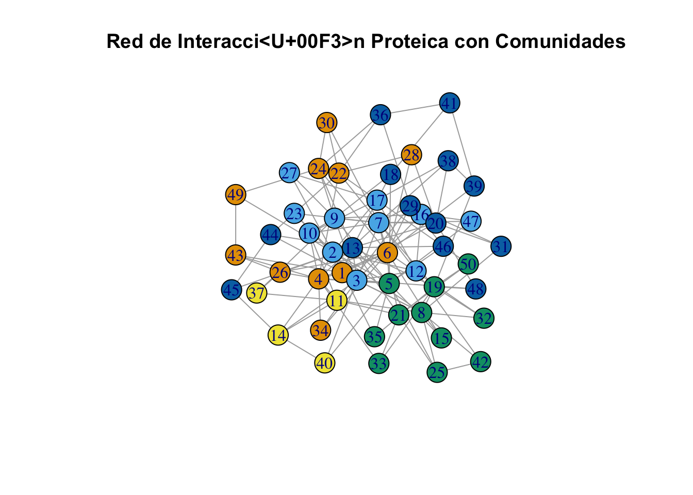
# Verificamos la conectividad de nodos y aristas
cat("Conectividad de nodos (g_high):", vertex_connectivity(g_high), "\n")Conectividad de nodos (g_high): 4 cat("Conectividad de aristas (g_high):", edge_connectivity(g_high), "\n")Conectividad de aristas (g_high): 4 cat("¿Es conexo (g_high)?", is_connected(g_high), "\n")<U+00BF>Es conexo (g_high)? TRUE FIGURA 1: Grafo con alta conectividad.
En este caso, la función vertex_connectivity(g_high) y edge_connectivity(g_high) muestran que el grafo tiene alta conectividad de nodos y de aristas, ya que ambos valores serán altos en un grafo completo. La función is_connected(g_high) devolverá TRUE, indicando que el grafo es conexo.
En el segundo ejemplo, tenemos un grafo lineal o en forma de cadena. Este grafo tiene baja conectividad de nodos y aristas, ya que la eliminación de un nodo o arista específico puede desconectar la red.
# Grafo lineal de 5 nodos (baja conectividad)
g_low <- make_graph(edges = c(1, 2, 2, 3, 3, 4, 4, 5), n = 5, directed = FALSE)
plot(g_low, main = "Grafo con Baja Conectividad")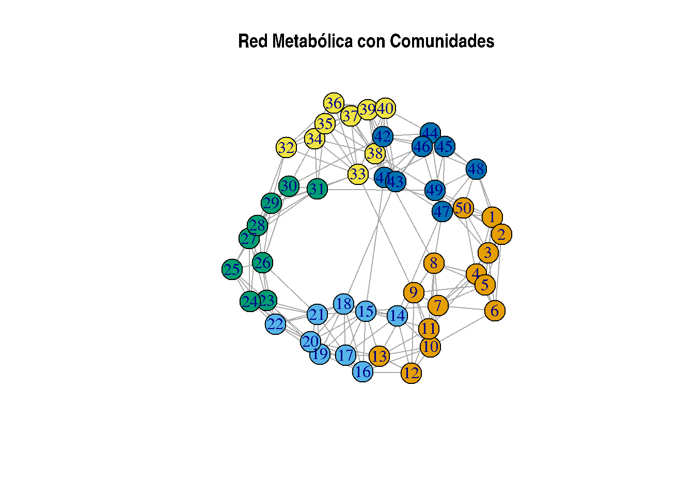
# Verificamos la conectividad de nodos y aristas
cat("Conectividad de nodos (g_low):", vertex_connectivity(g_low), "\n")Conectividad de nodos (g_low): 1 cat("Conectividad de aristas (g_low):", edge_connectivity(g_low), "\n")Conectividad de aristas (g_low): 1 cat("¿Es conexo (g_low)?", is_connected(g_low), "\n")<U+00BF>Es conexo (g_low)? TRUE FIGURA 2: Grafo con baja conectividad.
En este grafo lineal, la conectividad de nodos y de aristas es baja. La eliminación del nodo central (nodo 3) o cualquiera de sus aristas adyacentes desconectaría el grafo, dividiéndolo en dos componentes separados. En este caso, la función is_connected(g_low) devolverá TRUE, indicando que el grafo es conexo en su estado actual, pero su conectividad es débil.
En redes grandes y complejas, la conectividad es crucial para determinar la robustez de la red frente a la eliminación de nodos o aristas. Un grafo con alta conectividad es menos susceptible a la desconexión, mientras que uno con baja conectividad puede dividirse fácilmente ante la pérdida de algunos elementos.
Antes de generar redes aleatorias, exploraremos un ejemplo de una red que consta de cinco nodos y seis aristas. Este ejemplo nos ayudará a entender cómo se pueden visualizar diferentes aspectos de una red.
# Crear un grafo con 5 nodos y 6 aristas
g_vis_examples <- make_graph(c("A", "B", "A", "C", "B", "D", "C", "D", "C", "E", "D", "E"), directed = FALSE)
# Visualizar la red básica
plot(g_vis_examples, vertex.label = V(g_vis_examples)$name, main = "Red para Visualizar")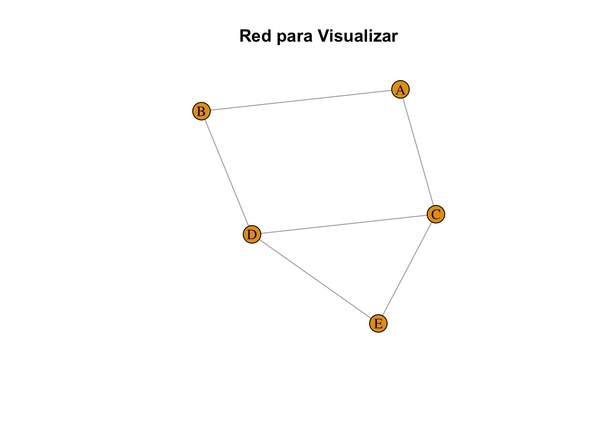
En una red cada arista se puede representar como un par ordenado de nodos: \(e = (u, v)\). Una table de pares de nodos se puede llamar como un “from-to list”.
La matriz de adyacencia es otra representación que indica la conexión entre los nodos. Se define como una matriz cuadrada \(A\) donde \(A[i, j] = 1\) si hay una arista entre el nodo \(i\) y el nodo \(j\), y \(A[i, j] = 0\) en caso contrario.
# Convertir el grafo en data.frame con formato "from-to"
# Convertir el grafo en una matriz de adyacencia
adjacency_matrix <- as.matrix(as_adjacency_matrix(g_vis_examples))
# Mostrar la matriz de adyacencia
adjacency_matrix A B C D E
A 0 1 1 0 0
B 1 0 0 1 0
C 1 0 0 1 1
D 0 1 1 0 1
E 0 0 1 1 0Matrices de adjacencia estan en general mas facil trabajar con ellos: mas facil hacer operaciones matematicas (aplicación de álgebra matricial) Tambien ofrecen acceso rápido a conexiones - no hay que traversar una lista.
Pero, sobre todo en redes grandes, pueden ser ineficiente - tienen \(N x N\) dimensiones, y en redes biologicas, la gran mayoria pueden ser ceros
Por ejemplo, Si una red tiene 1,000 nodos, una matriz de adyacencia requeriría 1,000^2 =1,000,000 entradas, independientemente de cuántas conexiones realmente existan entre los nodos. Aunque solo una fracción de estas entradas podría representar enlaces reales, todas las celdas deben almacenarse en la memoria.
Tambien existe representaciones sparse, por ejemplo en R:
# Instala el paquete si aún no está instalado
if (!requireNamespace("Matrix", quietly = TRUE)) {
install.packages("Matrix")
}
# Cargar el paquete Matrix
library(Matrix)
# Crear una matriz dispersa
# Definimos una matriz de 5x5 con solo algunos enlaces
adj_matrix <- Matrix(c(0, 1, 0, 0, 1,
1, 0, 1, 0, 0,
0, 1, 0, 1, 0,
0, 0, 1, 0, 1,
1, 0, 0, 1, 0),
nrow = 5, ncol = 5, sparse = TRUE)
# Mostrar la matriz dispersa
print(adj_matrix)5 x 5 sparse Matrix of class "dsCMatrix"
[1,] . 1 . . 1
[2,] 1 . 1 . .
[3,] . 1 . 1 .
[4,] . . 1 . 1
[5,] 1 . . 1 .# igraph ahora usa matrices sparse por definicion:
print(as_adjacency_matrix(g_vis_examples))5 x 5 sparse Matrix of class "dgCMatrix"
A B C D E
A . 1 1 . .
B 1 . . 1 .
C 1 . . 1 1
D . 1 1 . 1
E . . 1 1 .Porque usa menos memoria el sparse matrix?
Una matriz dispersa (o sparse matrix) utiliza menos memoria porque solo almacena los elementos no cero y sus posiciones, mientras que una matriz densa almacena todos los elementos, incluidos los ceros.
# Cargar el paquete Matrix
library(Matrix)
# Crear una matriz de adyacencia 20000x20000 en base R (estimada no. genes en genoma humano segun un articulo famoso)
# Han estimado 650000 interacciones entre estos genes
set.seed(42)
dense_matrix <- matrix(0, nrow = 20000, ncol = 20000)
positions <- sample(1:(1000*1000), size = 650000) # Solo 650000 conexiones
dense_matrix[positions] <- 1
# Mostrar el tamaño en memoria de la matriz densa
dense_matrix_size <- object.size(dense_matrix)
print(paste("Tamaño de la matriz densa:", format(dense_matrix_size, units = "auto")))[1] "Tama<U+00F1>o de la matriz densa: 3 Gb"# Convertir la matriz densa a una matriz dispersa
sparse_matrix <- as(dense_matrix, "sparseMatrix")
# Mostrar el tamaño en memoria de la matriz dispersa
sparse_matrix_size <- object.size(sparse_matrix)
print(paste("Tamaño de la matriz dispersa:", format(sparse_matrix_size, units = "auto")))[1] "Tama<U+00F1>o de la matriz dispersa: 7.5 Mb"A continuación, se presentan diez maneras diferentes de visualizar la misma red, modificando colores, tipos de aristas y otros parámetros:
plot(g_vis_examples, vertex.color = c("red", "green", "blue", "orange", "purple"), vertex.label = V(g_vis_examples)$name, main = "Colores de Nodos Diferentes")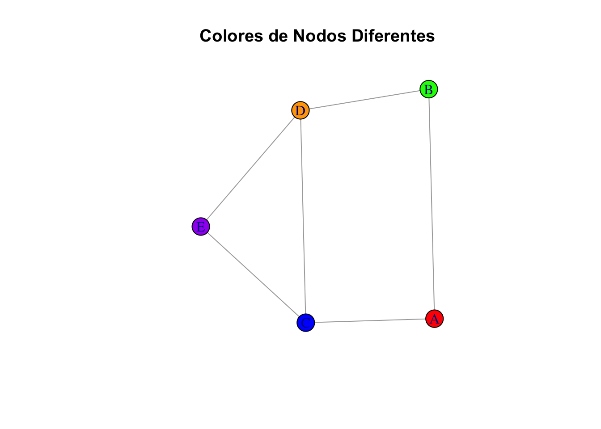
vertex_sizes <- degree(g_vis_examples) * 5
plot(g_vis_examples, vertex.size = vertex_sizes, vertex.label = V(g_vis_examples)$name, main = "Tamaño de Nodos Basado en Grado")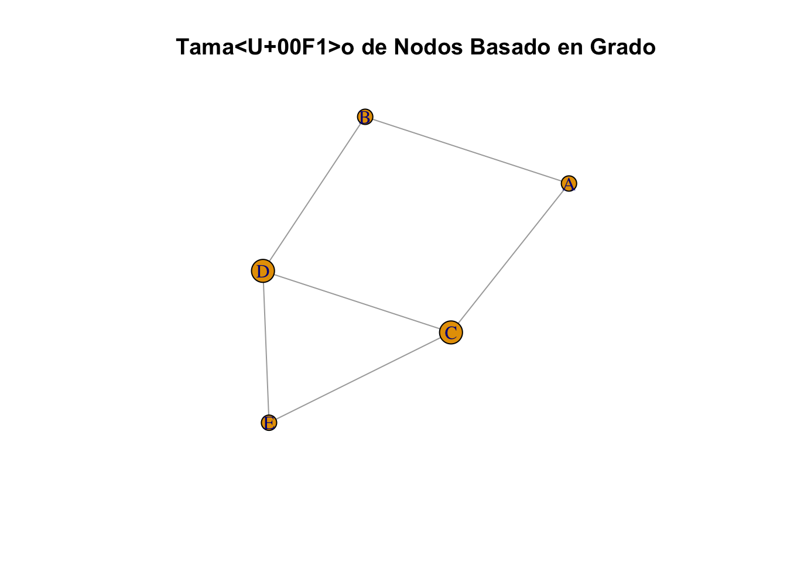
plot(g_vis_examples, edge.lty = "dotted", vertex.label = V(g_vis_examples)$name, main = "Aristas Dotted")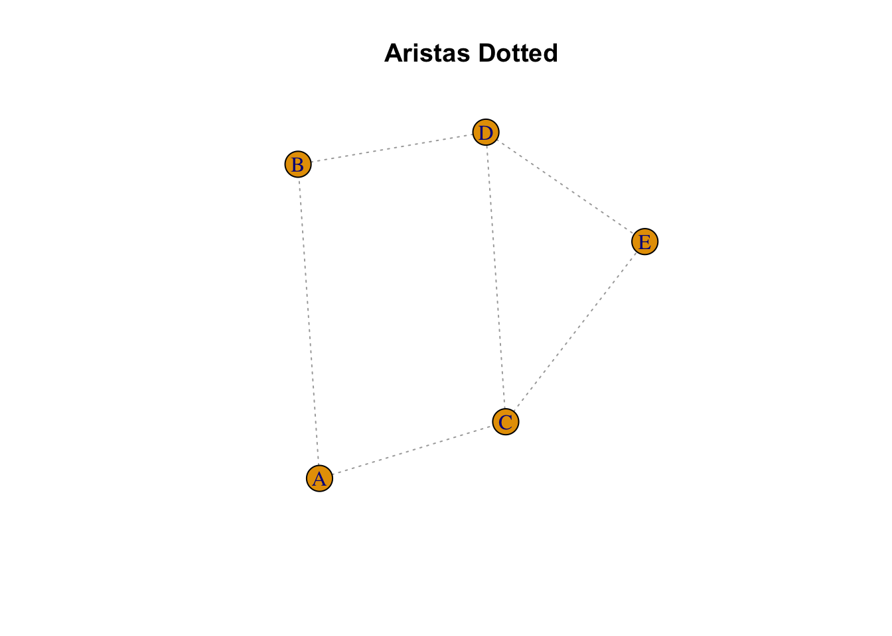
plot(g_vis_examples, edge.color = "purple", vertex.label = V(g_vis_examples)$name, main = "Colores de Aristas Diferentes")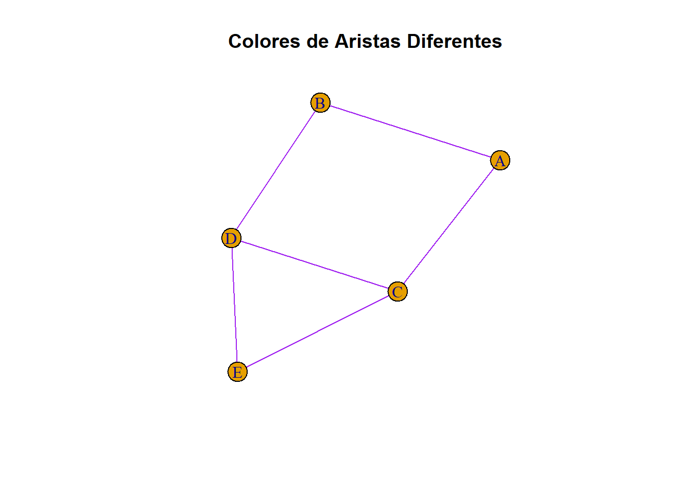
plot(g_vis_examples, layout = layout_in_circle, vertex.label = V(g_vis_examples)$name, main = "Estructura Circular")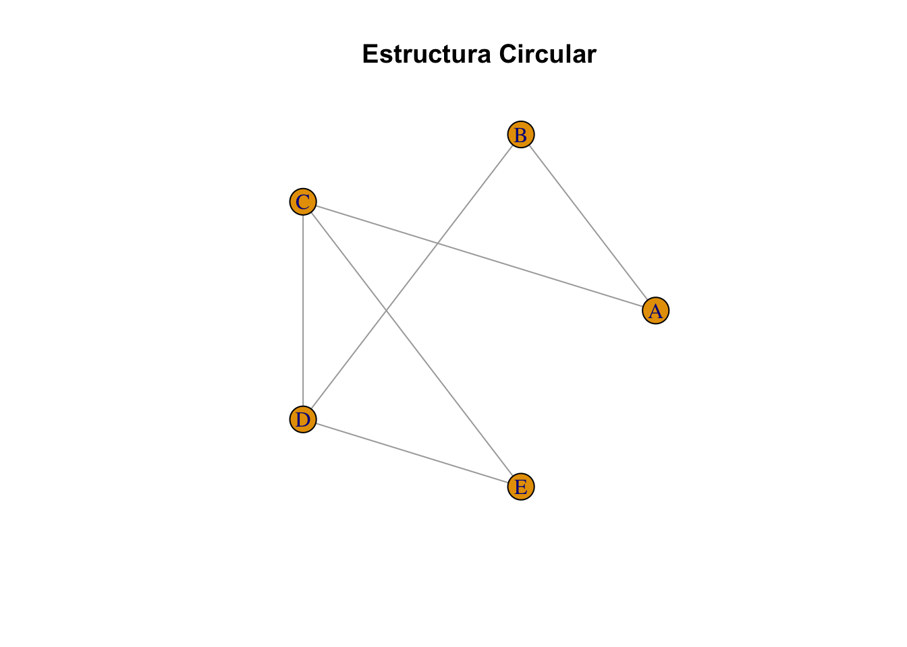
# No se ver muy bien - vamos a ver mejro
# Crear un grafo aleatorio con 20 nodos y un número específico de aristas
set.seed(1)
g_20 <- sample_gnp(20, p = 0.2) # Generar una red aleatoria
# Visualizar la red en un layout circular
plot(g_20, layout = layout_in_circle, vertex.label = V(g_20)$name,
vertex.color = "lightblue", edge.color = "gray", main = "Red Circular con 20 Nodos")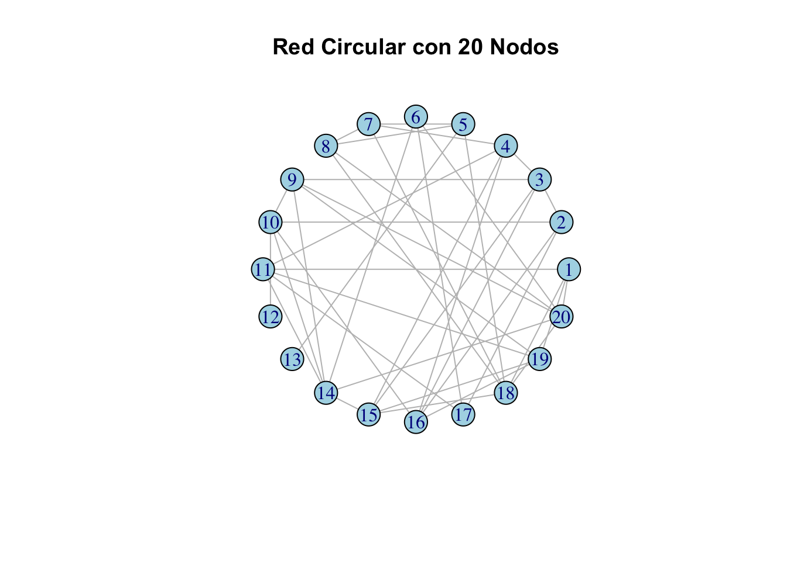
plot(g_vis_examples, layout = layout_on_grid, vertex.label = V(g_vis_examples)$name, main = "Estructura de Grid")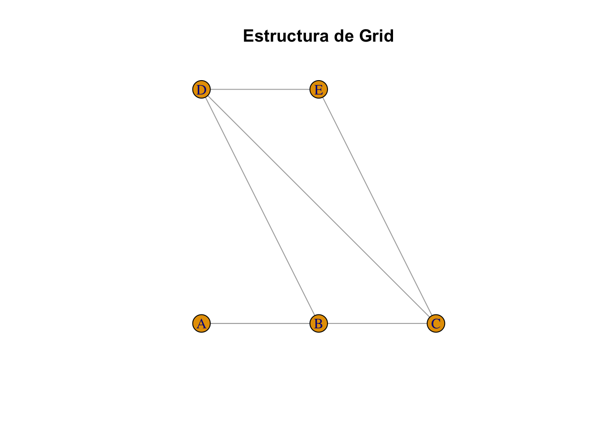
plot(g_20, layout = layout_on_grid, vertex.label = V(g_20)$name,
vertex.color = "lightgreen", edge.color = "gray", main = "Red Grid con 20 Nodos")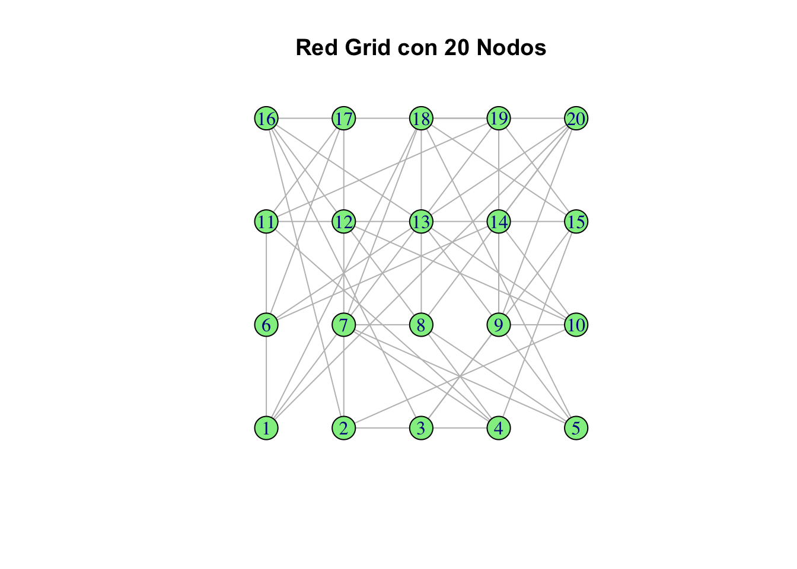
# Calcular el grado para cada nodo
degree_values <- degree(g_20)
# Normalizar los valores del grado para que estén entre 0 y 1
degree_normalized <- (degree_values - min(degree_values)) / (max(degree_values) - min(degree_values))
# Asignar colores según el grado
# Usaremos un gradiente de colores de azul (bajo grado) a rojo (alto grado)
node_colors <- colorRampPalette(c("blue", "red"))(length(degree_normalized))[rank(degree_normalized)]
# Graficar el grafo
plot(g_20, vertex.color = node_colors, main = "Grafo con Nodos Coloreados por Grado")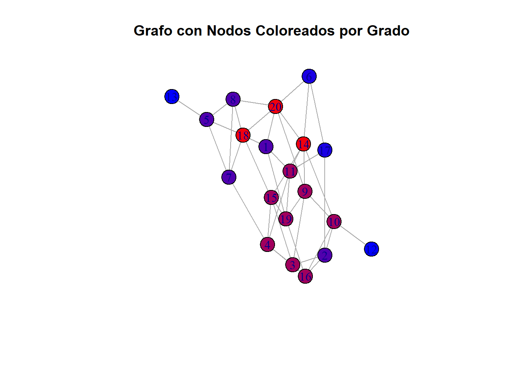
set.seed(42) # Para reproducibilidad
plot(g_vis_examples, vertex.label = V(g_vis_examples)$name, vertex.size = 10, edge.curved = 0.2, main = "Curved edges")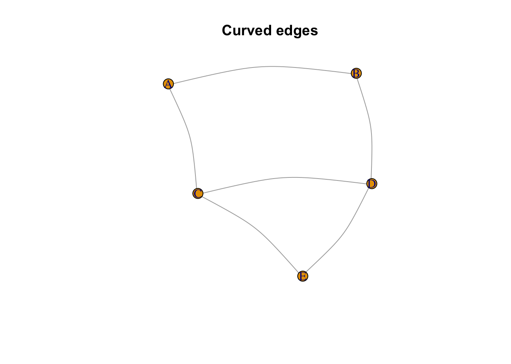
set.seed(42) # Para reproducibilidad
plot(g_vis_examples, layout = layout_randomly, vertex.label = V(g_vis_examples)$name, main = "Colocación Aleatoria")
Estas diferentes visualizaciones muestran cómo se puede alterar la apariencia de una red más compleja utilizando el paquete igraph. Además, la matriz de adyacencia proporciona una representación clara de las conexiones entre los nodos, lo que puede ser útil para análisis posteriores. Cada modificación visual puede ayudar a resaltar diferentes características de la red y facilitar la comprensión de su estructura y propiedades.
Creamos un grafo simple para ilustrar la funcionalidad básica.
# Crear un grafo de isla
set.seed(42)
g <- sample_islands(3, 10, 5/10, 1)
plot(g, vertex.label=V(g)$name, main="Grafo de Isla")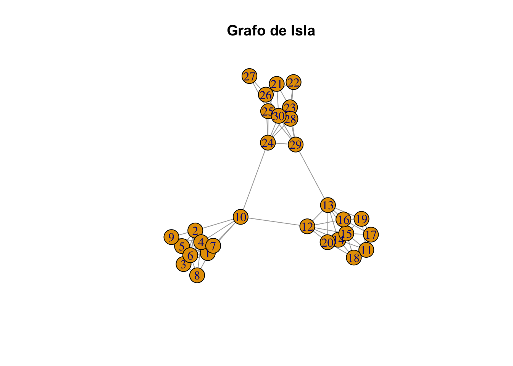
La función sample_islands genera un grafo que representa un conjunto de islas. En este modelo, cada “isla” es un conjunto de nodos altamente conectados, y hay pocas conexiones entre las islas. Este tipo de red se utiliza a menudo para modelar sistemas donde existen grupos interconectados, pero con poca interacción entre esos grupos.
Características:
Nodos dentro de una isla están densamente conectados. Pocas o ninguna conexión entre islas. Se observa un alto coeficiente de clustering dentro de las islas (More on this later :).
# Grafo Erdős-Rényi
g_er <- sample_gnp(100, p = 0.05)
plot(g_er, vertex.size=5, main="Grafo Erdős-Rényi")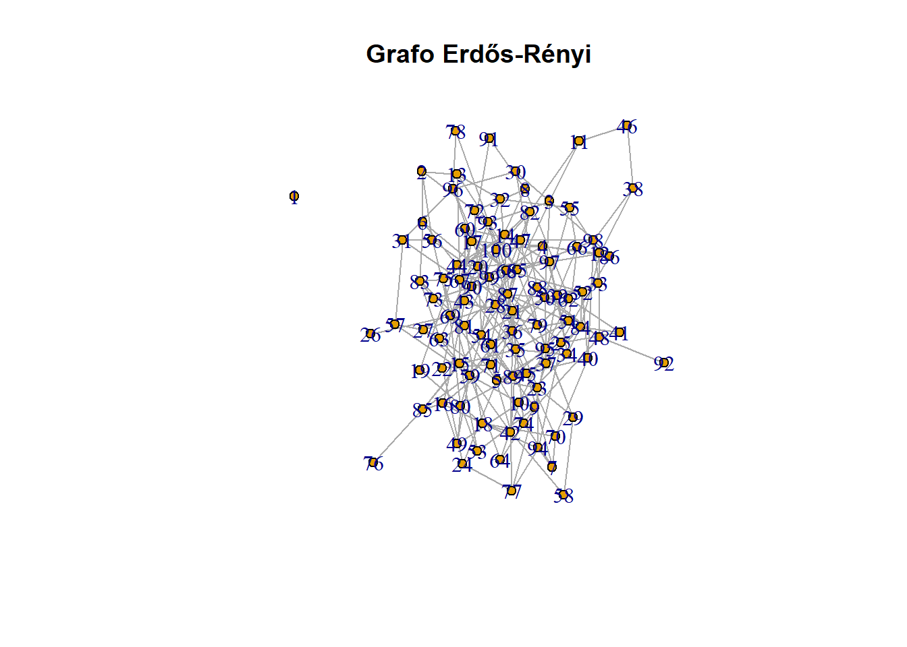
La función sample_gnp genera un grafo aleatorio utilizando el modelo de Erdős-Rényi, donde se crea un grafo al agregar aristas de forma aleatoria entre un conjunto de nodos. Cada arista se incluye con una probabilidad p. Este modelo es útil para estudiar propiedades de grafos en general y es una buena representación de redes donde cada conexión es independiente.
Características:
Cada par de nodos tiene una probabilidad p de estar conectado. Puede generar redes densas o dispersas, dependiendo de p. Generalmente, presenta un coeficiente de clustering más bajo en comparación con redes altamente agrupadas (More on this later :).
# Grafo Barabási-Albert
g_ba <- sample_pa(100)
plot(g_ba, vertex.size=5, main="Grafo Barabási-Albert")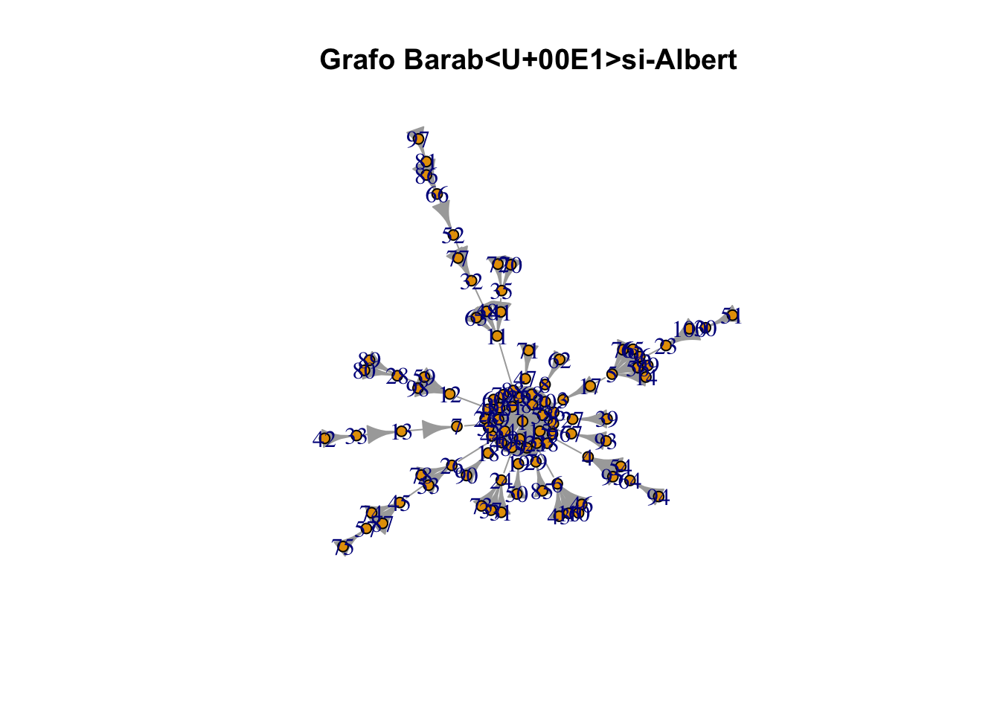
La función sample_pa genera un grafo siguiendo el modelo de Barabási-Albert, que es un modelo de red de escala libre. Este modelo simula el crecimiento de redes donde nuevos nodos se conectan a nodos existentes con una probabilidad proporcional a su grado, lo que significa que los nodos más conectados tienen más probabilidades de recibir nuevas conexiones.
Características:
Genera redes de escala libre con una distribución de grado que sigue una ley de potencia (more later). Presenta nodos hubs (nodos con un grado alto). Centralidad de grado generalmente alta en nodos muy conectados (more on this later).
Aun mas ejemplos de personalización de redes, combinando factores, en un solo bloque de código con comentarios explicativos.
# Personalización de redes en igraph
# Grafo de ejemplo
g <- sample_gnp(20, p = 0.1)
# Personalizar atributos de nodos
V(g)$color <- ifelse(degree(g) > 2, "red", "blue") # Color por grado
V(g)$size <- degree(g) * 3 # Tamaño de nodo proporcional al grado
V(g)$label <- paste0("Node:", V(g)) # Etiquetas de nodos
# Personalizar atributos de aristas
E(g)$color <- "gray" # Color de aristas
E(g)$width <- 2 # Ancho de aristas
# Graficar el grafo personalizado
plot(g, vertex.label=V(g)$label, edge.arrow.size=0.5,
main="Grafo Personalizado: Atributos de Nodos y Aristas")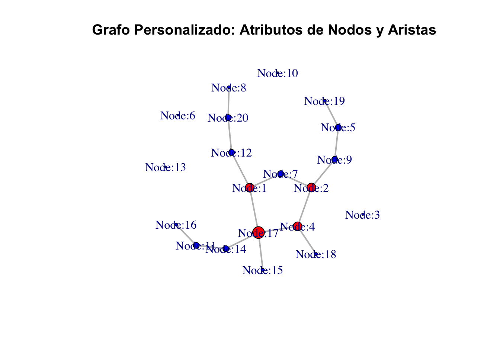
El coeficiente de clustering es una medida que indica la tendencia de los nodos en una red a agruparse en clústeres. Un alto coeficiente de clustering para un nodo (local) sugiere que un nodo es parte de una comunidad densa. En biología, esto puede ser relevante para estudiar interacciones entre proteínas, donde un alto coeficiente de clustering entre varios genes puede indicar una comunidad de proteínas que interactúan fuertemente entre sí.
Se puede definir como:
\[ C(v) = \frac{2 \times \text{number of triangles through } v}{\text{degree}(v) \times (\text{degree}(v) - 1)} \]
O quizas mas intuitivemente, puede definirse en términos de la proporción de triángulos presentes en el grafo en comparación con el número total de triángulos posibles que pueden formarse a partir de los vecinos de un nodo. Esta definición se centra en la noción de “triángulos” y se expresa como:
\[ C(v) = \frac{\text{Número de triángulos en los vecinos de } v}{\text{Número total de triángulos posibles entre los vecinos de } v} \]
Esta definición es útil para visualizar cómo las interacciones locales entre los nodos contribuyen a la estructura global de la red, y es especialmente relevante en el contexto de redes sociales y biológicas, donde se pueden observar grupos de interacciones fuertes entre ciertos nodos.
# Crear una red aleatoria
set.seed(42)
g_clustering <- sample_gnp(n = 15, p = 0.15, directed = FALSE)
# Calcular el coeficiente de clustering por nodo
vertex_clustering <- transitivity(g_clustering, type = "local")
V(g_clustering)$color <- ifelse(vertex_clustering > 0, "red", "lightblue")
# Visualizar la red con coeficiente de clustering - si los vecinos estan conectadas, se visualiza en rojo!
set.seed(321)
plot(g_clustering, vertex.size = 5, vertex.label = NA, main = "Coeficiente de Clustering Local")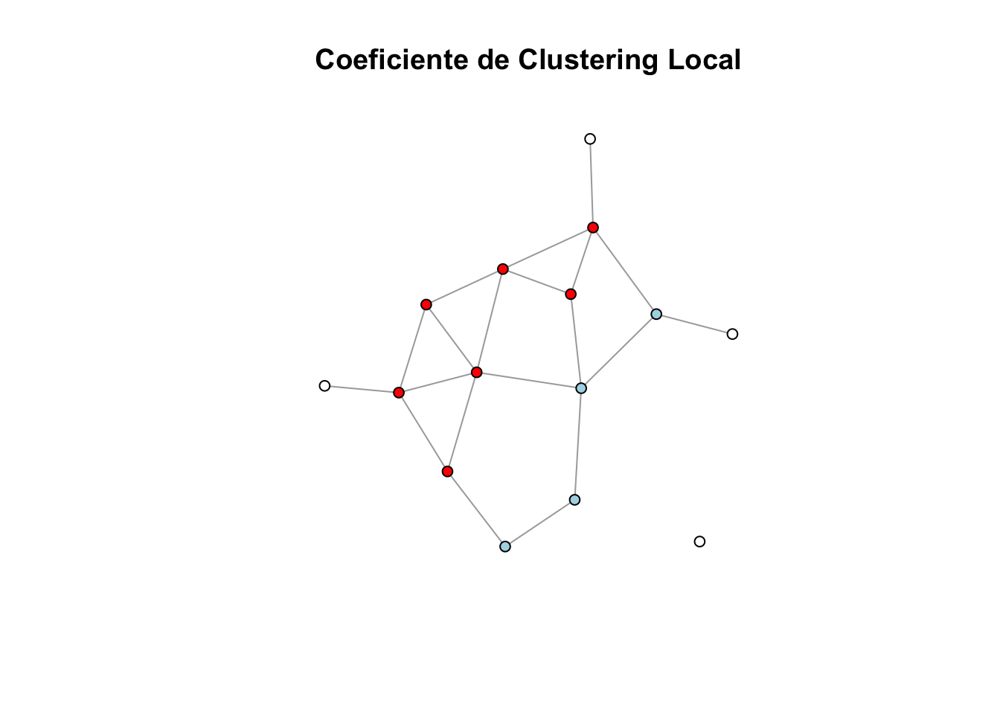
Este código calcula e imprime los coeficientes local de un pequeño grafo aleatorio y visualiza los nodos según el coeficiente de clustering > 1, donde los nodos rojos tienen un coeficiente > 1 (por lo menos un par de interactores interaccionan entre ellos - en otras palabras - FORMAN UN TRIANGULO) y los nodos azules tienen un coeficiente bajo.
Definición: El coeficiente de clustering global es una medida global que describe la tendencia general de la red de formar triángulos (conexiones entre tres nodos). Proporciona una visión general de la densidad de la red en términos de interacciones entre vecinos de los nodos.
Cálculo:
\[ C_{\text{global}} = \frac{1}{N} \sum_{v \in G} C(v) \]
Donde (N) es el número de nodos en el grafo y (C(v)) es el coeficiente de clustering local del nodo (v).
\[ C\_{\text{global}} = \frac{3 \times \text{Número de triángulos}}{\text{Número de tripletas conectadas}} \]
library(igraph)
set.seed(333)
# High Global Clustering Coefficient - Small-World Network
g_high_clustering <- sample_smallworld(dim = 1, size = 30, nei = 3, p = 0.05)
global_clustering_high <- transitivity(g_high_clustering, type = "global")
cat("Global Clustering Coefficient (High):", global_clustering_high, "\n")Global Clustering Coefficient (High): 0.4379085 # Low Global Clustering Coefficient - Random Network
g_low_clustering <- sample_gnp(30, p = 0.05, directed = FALSE)
global_clustering_low <- transitivity(g_low_clustering, type = "global")
cat("Global Clustering Coefficient (Low):", global_clustering_low, "\n")Global Clustering Coefficient (Low): 0.1 # Plotting both networks
par(mfrow = c(1, 2))
plot(g_high_clustering, main = paste("High Clustering (Coeff:", round(global_clustering_high, 2), ")"),
vertex.size = 8, vertex.label = NA, edge.color = "dodgerblue")
plot(g_low_clustering, main = paste("Low Clustering (Coeff:", round(global_clustering_low, 2), ")"),
vertex.size = 8, vertex.label = NA, edge.color = "tomato")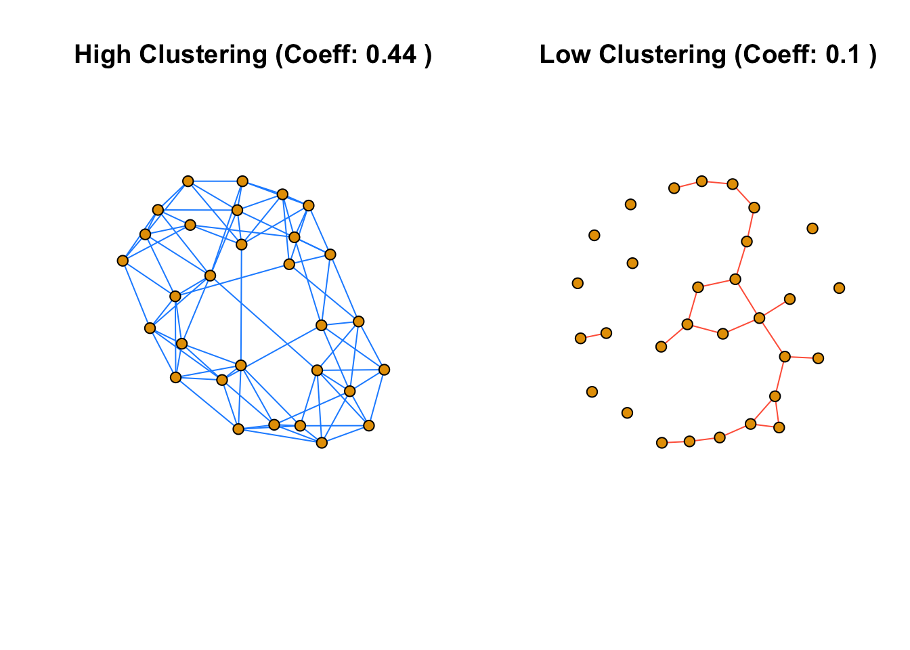
par(mfrow = c(1, 1))En las redes de interacción de proteínas, los genes que codifican proteínas que interactúan entre sí tienden a formar grupos o módulos con un alto coeficiente de clustering. Esto es relevante para identificar vías metabólicas o complejos proteicos.
La centralidad se refiere a la importancia de un nodo dentro de una red. Existen varios tipos de centralidad, entre ellos:
\[ C_g(v) = \text{degree}(v) \]
La centralidad de intermediación es una medida clave en la teoría de redes que indica cuántas veces un nodo actúa como “puente” o intermediario entre otros nodos. Es un concepto crucial para entender la estructura de la red en términos de control o flujo de información, recursos, o influencia a través de los nodos de la red.
La centralidad de intermediación de un nodo \(v\) en una red se define como:
\[ C_b(v) = \sum_{s \neq v \neq t} \frac{\sigma_{st}(v)}{\sigma_{st}} \]
La centralidad de intermediación calcula, para un nodo dado, la fracción de caminos más cortos entre todos los pares de nodos \(s\) y \(t\) en la red que pasan a través de él. Cuanto mayor sea este valor, más “importante” es ese nodo en la red en términos de conectar diferentes partes de la misma.
La centralidad de intermediación mide el papel de un nodo como intermediario entre otros nodos de la red. Un nodo con una centralidad de intermediación alta es uno que está en el medio de muchos caminos más cortos entre otros nodos. Esencialmente, estos nodos tienen un poder significativo en términos de control del flujo de información o recursos a través de la red.
En el contexto biológico, la centralidad de intermediación tiene aplicaciones en varias áreas, como las redes de interacción proteína-proteína (PPI), las redes metabólicas, y las redes de regulación génica. Identificar los nodos con alta centralidad de intermediación puede ayudar a entender los puntos de control clave o los “puentes” que facilitan la comunicación entre diferentes partes de una red biológica.
En una red de interacción proteína-proteína, las proteínas con alta centralidad de intermediación pueden ser aquellas que conectan diferentes “modulos” funcionales dentro de la red. Estas proteínas actúan como puntos de control para la transmisión de señales entre distintas funciones celulares. Si una proteína con alta centralidad de intermediación se ve afectada por mutaciones, podría tener un impacto significativo en varias vías biológicas o incluso en la enfermedad.
Ejemplo: En una red PPI de una célula humana, una proteína como TP53 (p53), que tiene un papel central en la regulación del ciclo celular y la respuesta al daño del ADN, podría tener una alta centralidad de intermediación. Si p53 se ve alterada o desregulada, puede afectar numerosas vías celulares relacionadas con el cáncer, como la apoptosis, la reparación del ADN y la regulación del ciclo celular.
En una red metabólica, un metabolito o enzima con alta centralidad de intermediación puede ser clave para conectar diversas rutas metabólicas. Estos metabolitos actúan como puentes entre diferentes procesos metabólicos, lo que permite una integración eficiente de los recursos celulares.
Ejemplo: El ATP (adenosín trifosfato), que es esencial para casi todas las reacciones bioquímicas celulares, puede actuar como un nodo con alta centralidad de intermediación en una red metabólica. La alteración de la producción o el uso de ATP afecta una multitud de rutas metabólicas y es crucial para la función celular.
En las redes de regulación génica, los factores de transcripción que conectan diferentes conjuntos de genes pueden tener una alta centralidad de intermediación. Estos factores de transcripción no solo regulan la expresión de un conjunto de genes, sino que también actúan como intermediarios para la integración de diversas señales celulares.
Ejemplo: El factor de transcripción NF-kB es un nodo con alta centralidad de intermediación en las redes de regulación génica. Controla la expresión de genes implicados en la respuesta inmune y en procesos inflamatorios. Si NF-kB está desregulado, puede contribuir a enfermedades como el cáncer, enfermedades autoinmunes y trastornos inflamatorios.
set.seed(123)
g <- sample_gnp(10, p = 0.5)
# Calculate betweenness centrality for all nodes
betweenness_centrality <- betweenness(g)
# Normalize the betweenness values for better visualization (optional)
betweenness_normalized <- (betweenness_centrality - min(betweenness_centrality)) /
(max(betweenness_centrality) - min(betweenness_centrality))
# Visualize the graph with nodes colored by betweenness centrality
plot(g,
vertex.size = 20,
vertex.color = heat.colors(100, rev=TRUE)[round(betweenness_normalized * 99) + 1], # Color nodes based on centrality # Optionally remove labels
main = "Graph colored by Betweenness Centrality")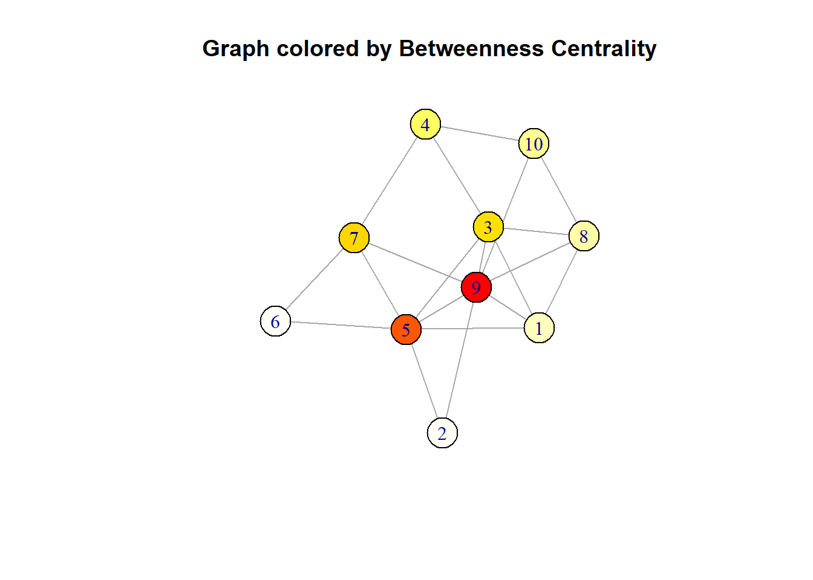
Las redes de escala libre son un tipo particular de red que se caracteriza por una distribución de grado que sigue una ley de potencia. En este tipo de redes, existen unos pocos nodos con un número muy alto de conexiones (hubs), mientras que la mayoría de los nodos tienen pocas conexiones. Esta estructura es fundamental para entender cómo funcionan muchas redes complejas en la naturaleza y en sistemas biológicos, como las redes de interacción proteína-proteína o las redes neuronales.
La distribución de grado en las redes de escala libre sigue una ley de potencia, lo que significa que el número de nodos con un cierto grado ( k ) (número de conexiones) disminuye rápidamente a medida que ( k ) aumenta. Matemáticamente, esto se expresa como:
\[ P(k) \sim k^{-\gamma} \]
Donde:
Este tipo de distribución es característica de redes autoorganizadas o generadas por crecimiento preferencial, donde nuevos nodos tienden a conectarse preferentemente a los nodos que ya están muy conectados. Esta propiedad genera hubs o nodos centrales, que son cruciales para la conectividad de la red.
En redes de interacción proteína-proteína (PPI), las proteínas más fundamentales para las funciones celulares tienden a tener un alto grado de conectividad, es decir, son hubs. Estas proteínas suelen ser las que orquestan múltiples procesos celulares, como la transcripción genética, la reparación del ADN y la señalización celular.
La alteración o mutación de BRCA1 está asociada con un mayor riesgo de desarrollar cáncer de mama y ovario. Las mutaciones en BRCA1 afectan su capacidad para interactuar con otras proteínas de la red, lo que compromete la reparación del ADN y aumenta la probabilidad de que ocurran mutaciones genéticas que conduzcan al cáncer. En este caso, BRCA1 no solo es un hub en una red de interacciones, sino que también es un punto crítico para mantener la integridad genética celular.
Una de las características interesantes de las redes de escala libre es que, debido a la existencia de hubs, estas redes son robustas frente a fallos aleatorios. Esto significa que si se eliminan nodos de la red de manera aleatoria, la conectividad global de la red no se verá gravemente afectada, ya que los nodos de baja conectividad no son esenciales para la red. Sin embargo, si se atacan los hubs (nodos altamente conectados), la red puede volverse muy vulnerable, ya que la eliminación de estos nodos puede desconectar grandes partes de la red.
En las redes neuronales, los hubs son neuronas clave que conectan diferentes regiones del cerebro. La red de conectividad cerebral sigue una estructura de escala libre, donde ciertas neuronas tienen muchas conexiones con otras, permitiendo una comunicación eficiente entre regiones cerebrales distantes. Estas neuronas de alto grado son críticas para el procesamiento de información en el cerebro.
Debido a su estructura jerárquica, las redes de escala libre son vulnerables a ataques dirigidos a los hubs. Al eliminar estos nodos clave, la conectividad de la red puede colapsar rápidamente, lo que afecta su funcionamiento global.
– Otro ejemplo: Se han usado esta propiedad para diseñar antibioticos - para atacar una proteina hub para afectar al maximo posible el funcionamiento de la bacteria
En R, podemos generar y analizar una red de escala libre utilizando el modelo de Barabási-Albert (BA), que es un modelo clásico para generar redes de escala libre. A continuación se muestra un código en R que genera una red de escala libre y visualiza la distribución de grados:
# Cargar la librería igraph
library(igraph)
# Crear una red de escala libre usando el modelo de Barabási-Albert
g_sf <- sample_pa(1000)
# Obtener la distribución de grado
degree_distribution <- degree(g_sf)
# Visualizar la distribución de grado
hist(degree_distribution, breaks=50, main="Distribución de Grado de una Red de Escala Libre",
xlab="Grado", ylab="Frecuencia")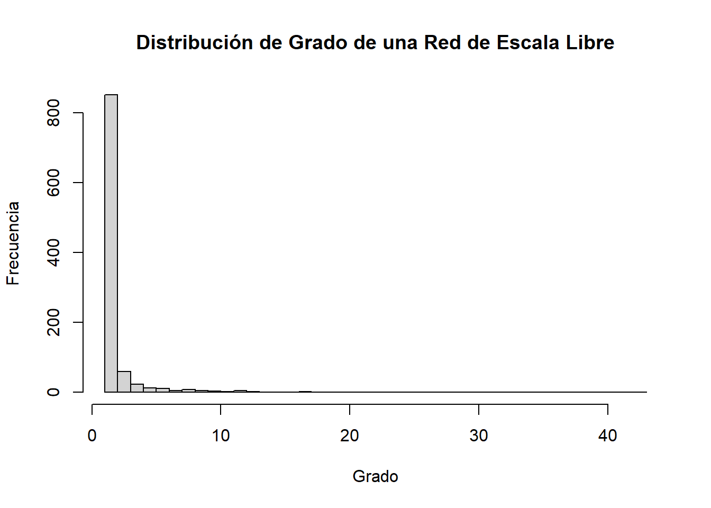
Las redes de escala libre están presentes en muchos sistemas biológicos:
Redes Metabólicas: En las redes metabólicas, los metabolitos con alto grado pueden ser esenciales para varias rutas metabólicas y actúan como puntos de integración. Si estos metabolitos se alteran, pueden afectar varias funciones biológicas.
Redes de Regulación Génica: En las redes de regulación génica, ciertos factores de transcripción actúan como hubs que conectan diferentes vías de regulación, lo que les permite controlar una gran cantidad de genes. Las alteraciones en estos hubs pueden tener efectos significativos en el desarrollo y la homeostasis celular.
Redes de Interacción de Proteínas (PPI): Las proteínas que funcionan como hubs en una red de interacción proteína-proteína tienen un papel crucial en la regulación de procesos biológicos complejos. Alteraciones en estas proteínas clave pueden resultar en enfermedades graves, como el cáncer.
Este tutorial proporciona una visión general de los conceptos fundamentales en el análisis de redes utilizando igraph en R. A lo largo de esta práctica, se han presentado ejemplos que ilustran la personalización de redes y la aplicación de estos conceptos en el contexto de la biología.